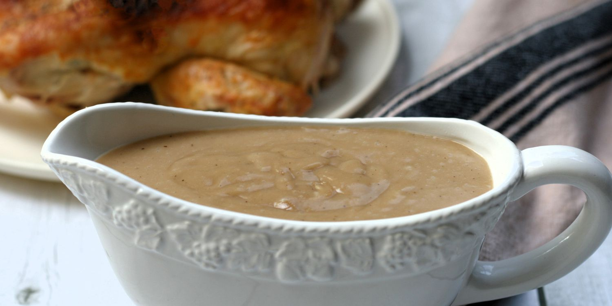

Chicken Gravy

Description
There's nothing like classic gravy when you're craving comfort food. This
classic chicken gravy comes together in under half an hour with just six
ingredients. What more could you ask for?
Ingredients
- 1/2 cup unsalted butter
- 1/2 cup all-purpose flour
- 1 quart cold chicken stock
- 1/3 cup heavy cream
- Salt and ground white pepper to taste
- 1 pinch of cayenne pepper
Steps
- Melt butter in a saucepan over medium-low heat. Gradually whisk in
flour, reduce heat to low, and stir until the roux has turned golden
and smells like a cooked pie crust, 10 to 12 minutes.
- Whisk in about 2 cups of cold stock, a little at a time,
stirring to remove any lumps. Add remaining 2 cups stock.
- Cook, stirring occasionally, until gravy is thick enough
to coat the back of a spoon, 10 to 15 minutes.
- Stir in heavy cream, and season with salt, white pepper,
and cayenne. Taste and if the gravy still tastes starchy,
let it simmer a little longer, adding more cold stock if necessary.
- Serve hot and enjoy!